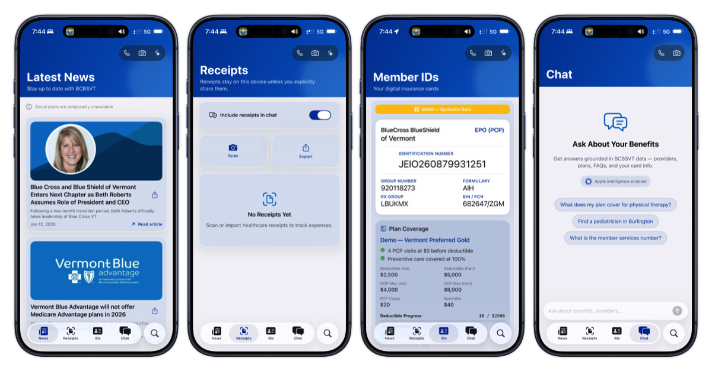

Software · SwiftUI
CareBridge Companion
A mobile companion app concept for health plan members who need receipts, member IDs, plan details, and benefit questions in one calm place.

Challenge
Members often move between cards, receipts, plan language, and support channels. The prototype brings those tasks into a single app structure.
Approach
The interface favors large task cards, plain labels, and short conversational prompts so the app feels useful before it feels comprehensive.
Outcome
The case study shows how a narrow companion app can test navigation, content hierarchy, and service moments before deeper integration work.